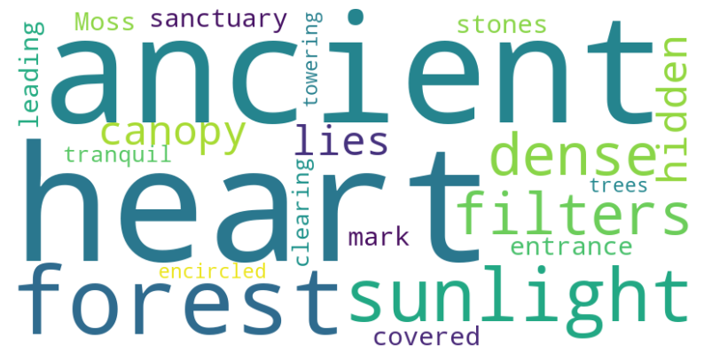
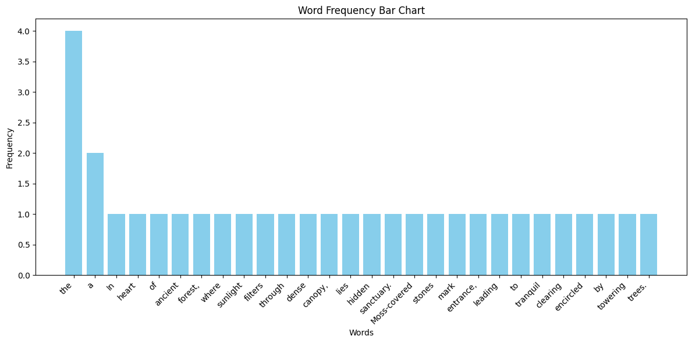

TextWiz Package#
# import package libraries
from textwiz.preprocessing import TextProcessor
from textwiz.mining import TextAnalyzer
from textwiz.visuals import TextVisualizer
Text Processor#
processor = TextProcessor(extra_stopwords=['mark', 'filters', 'lies'])
text = "In the heart of the ancient forest, where sunlight filters through the dense canopy, lies a hidden sanctuary. Moss-covered stones mark the entrance, leading to a tranquil clearing encircled by towering trees."
processed_text = processor.remove_punctuation(text)
tokens = processor.tokenize(processed_text)
tokens_without_stopwords = processor.remove_stopwords(processed_text)
stemmed_text = processor.stemming(processed_text)
lemmatized_text = processor.lemmatization(processed_text)
print("Processed Text:", processed_text)
print("Tokens:", tokens)
print("Tokens without stopwords:", tokens_without_stopwords)
print("Stemmed Text:", stemmed_text)
print("Lemmatized Text:", lemmatized_text)
Processed Text: In the heart of the ancient forest where sunlight filters through the dense canopy lies a hidden sanctuary Moss covered stones mark the entrance leading to a tranquil clearing encircled by towering trees
Tokens: ['In', 'the', 'heart', 'of', 'the', 'ancient', 'forest', 'where', 'sunlight', 'filters', 'through', 'the', 'dense', 'canopy', 'lies', 'a', 'hidden', 'sanctuary', 'Moss', 'covered', 'stones', 'mark', 'the', 'entrance', 'leading', 'to', 'a', 'tranquil', 'clearing', 'encircled', 'by', 'towering', 'trees']
Tokens without stopwords: ['heart', 'ancient', 'forest', 'sunlight', 'dense', 'canopy', 'hidden', 'sanctuary', 'Moss', 'covered', 'stones', 'entrance', 'leading', 'tranquil', 'clearing', 'encircled', 'towering', 'trees']
Stemmed Text: in the heart of the ancient forest where sunlight filter through the dens canopi lie a hidden sanctuari moss cover stone mark the entranc lead to a tranquil clear encircl by tower tree
Lemmatized Text: In the heart of the ancient forest where sunlight filter through the dense canopy lie a hidden sanctuary Moss covered stone mark the entrance leading to a tranquil clearing encircled by towering tree
Text Analyzer#
analyzer = TextAnalyzer()
# Example documents
documents = [
"In the heart of the ancient forest, where sunlight filters through the dense canopy.",
"Moss-covered stones mark the entrance to a tranquil clearing encircled by towering trees.",
"Whispers of the wind intertwine with the songs of birds, creating a symphony of nature's harmony.",
"Time seems to stand still in this enchanted realm, where every leaf tells a tale and every rustle speaks of secrets untold.",
]
# Bag of Words representation
bow_representation = analyzer.bag_of_words(documents)
print("Bag of Words Representation:")
for i, doc in enumerate(bow_representation):
print(f"Document {i+1}: {doc}")
# Generating N-grams
text = "In the heart of the ancient forest lies a hidden sanctuary."
ngrams = analyzer.generate_ngrams(text, n=3)
print("\nN-grams:")
print(ngrams)
# TF-IDF vectors
tfidf_vectors = analyzer.tf_idf(documents)
print("\nTF-IDF Vectors:")
for i, vector in enumerate(tfidf_vectors):
print(f"Document {i+1}: {vector}")
# Keyword extraction based on importance (TF-IDF scores)
text = "Whispers of the wind intertwine with the songs of birds, creating a symphony of nature's harmony."
keywords_imp = analyzer.keyword_extraction_imp(text, num_keywords=3)
print("\nKeywords based on importance:")
print(keywords_imp)
# Keyword extraction based on frequency
text = "Time seems to stand still in this enchanted realm, where every leaf tells a tale and every rustle speaks of secrets untold."
keywords_freq = analyzer.keyword_extraction_freq(text, num_keywords=3)
print("\nKeywords based on frequency:")
print(keywords_freq)
# Calculating text similarity
doc1 = "In the heart of the ancient forest lies a hidden sanctuary."
doc2 = "The ancient forest shelters a sacred grove where whispers of nature's secrets echo."
similarity_score = analyzer.calculate_text_similarity(doc1, doc2)
print(f"\nSimilarity between documents '{doc1}' and '{doc2}': {similarity_score * 100:.2f}%")
Bag of Words Representation:
Document 1: ['In', 'ancient', 'canopy.', 'dense', 'filters', 'forest,', 'heart', 'of', 'sunlight', 'the', 'through', 'where']
Document 2: ['Moss-covered', 'a', 'by', 'clearing', 'encircled', 'entrance', 'mark', 'stones', 'the', 'to', 'towering', 'tranquil', 'trees.']
Document 3: ['Whispers', 'a', 'birds,', 'creating', 'harmony.', 'intertwine', "nature's", 'of', 'songs', 'symphony', 'the', 'wind', 'with']
Document 4: ['Time', 'a', 'and', 'enchanted', 'every', 'in', 'leaf', 'of', 'realm,', 'rustle', 'secrets', 'seems', 'speaks', 'stand', 'still', 'tale', 'tells', 'this', 'to', 'untold.', 'where']
N-grams:
['In the heart', 'the heart of', 'heart of the', 'of the ancient', 'the ancient forest', 'ancient forest lies', 'forest lies a', 'lies a hidden', 'a hidden sanctuary.']
TF-IDF Vectors:
Document 1: [0.049510512897138946, 0.0, 0.049510512897138946, 0.0, 0.049510512897138946, 0.049510512897138946, 0.020548719460841487, 0.049510512897138946, 0.049510512897138946, 0.049510512897138946, 0.049510512897138946, 0.049510512897138946]
Document 2: [0.053319013889226566, 0.053319013889226566, 0.053319013889226566, 0.0, 0.053319013889226566, 0.022129390188598528, -0.017164888562631517, 0.053319013889226566, 0.053319013889226566, 0.053319013889226566, 0.053319013889226566, 0.053319013889226566, 0.053319013889226566]
Document 3: [0.04332169878499658, 0.0, 0.0, 0.04332169878499658, 0.04332169878499658, 0.04332169878499658, 0.04332169878499658, 0.04332169878499658, 0.04332169878499658, -0.013946471957138107, 0.04332169878499658, 0.04332169878499658, 0.04332169878499658]
Document 4: [0.03150669002545206, 0.03150669002545206, 0.013076457838717312, 0.03150669002545206, 0.03150669002545206, 0.0, 0.03150669002545206, 0.03150669002545206, 0.03150669002545206, 0.013076457838717312, 0.06301338005090412, 0.03150669002545206, 0.03150669002545206, -0.010142888696100442, 0.03150669002545206, 0.03150669002545206, 0.03150669002545206, 0.03150669002545206, 0.0, 0.03150669002545206, 0.03150669002545206]
Keywords based on importance:
['Whispers', 'of', 'the']
Keywords based on frequency:
['every', 'Time', 'seems']
Similarity between documents 'In the heart of the ancient forest lies a hidden sanctuary.' and 'The ancient forest shelters a sacred grove where whispers of nature's secrets echo.': 25.00%
Text Visualizer#
visualizer = TextVisualizer()
text_vis = "In the heart of the ancient forest, where sunlight filters through the dense canopy, lies a hidden sanctuary. Moss-covered stones mark the entrance, leading to a tranquil clearing encircled by towering trees."
# Word Cloud
visualizer.word_cloud(text_vis)

# Bar chart
visualizer.bar_chart(text_vis)
